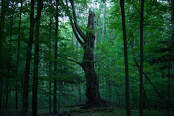

Jastkowice
Jastkowice – wieś położona w województwie podkarpackim, w powiecie stalowowolskim, w gminie Pysznica. Historia: Pierwsza wzmianka o Jastkowicach pochodzi z 1325 roku. Starosta sandomierski Drogosz z Chrobrza nadał sołectwo we wsi Jastkowice Mikołajowi z Jastkowic. Ale właściwy termin lokalizacji Jastkowic łączy się z datą 1 sierpnia 1375 roku, kiedy to królowa Węgier i Polski Elżbieta potwierdziła przywilej starosty Drogosza z Chrobrza. Legenda o wsi Jastkowice mówi, że księżniczka Elżbieta, córka Władysława Łokietka dała swojemu giermkowi Jaśkowi duży obszar leśny w podzięce za uratowanie jej życia, gdy napadł na nią dziki niedźwiedź. Nazwa wsi przez wiele pokoleń ulegała przeobrażeniom: Jaśkowice – Jaszkowice – Jastkowice. Wkrótce stały się wsią, w której powstały maziarnie i smolarnie. Potem w Jastkowicach zaczęto wytapiać żelazo wykorzystując do procesu hutniczego rudy darniowe. Król Zygmunt Stary w 1515 roku nadał Piotrowi przywilej budowy rudnicy, która stała się początkiem huty i kuźni żelaza. Z hutnictwem żelaza związane jest powstanie przysiółka Jastkowic - Ruda Jastkowska. Jej mieszkańcy zajmowali się wydobywaniem rudy darniowej na potrzeby rudnic jastkowskich.
Miejsce postoju i zwiedzania: Rezerwat przyrody Jastkowice
Rezerwat przyrody Jastkowice – rezerwat przyrody znajdujący się na terenie gminy Pysznica w województwie podkarpackim. Leży w obrębie Parku Krajobrazowego Lasy Janowskie. Położenie Rezerwat Jastkowice znajduje się w północnej części gminy Pysznica. Został utworzony dla zachowania pozostałości dawnej Puszczy Sandomierskiej. Przyroda Chroniony jest tutaj wielogatunkowy, naturalny las mieszany o charakterze pierwotnym. Rosną tu 200-letnie dęby, stare jodły i lipy, które do dziś odnawiają się w sposób naturalny. Z rzadkich roślin chronionych spotkać można wawrzynek wilczełyko, lilię złotogłów, groszek wschodniokarpacki, podkolan zielony, żywiec gruczołowaty i cebulkowy. Zwierzęta Liczne dziuple zamieszkują sowy i nietoperze.  zdjęcie pzedstawia starą lipę w rezerwacie
Źródło:
Wikipedia